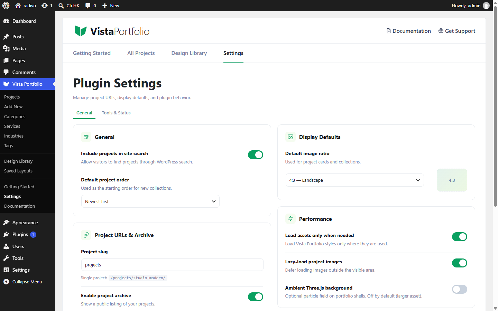

General Settings
Open Vista Portfolio → Settings and stay on the General area.

| Setting | What it does |
|---|---|
| Include projects in site search | When on, vista_project posts appear in WordPress search. |
| Default project order | Default sort for collections: date newest/oldest or title A–Z / Z–A. |